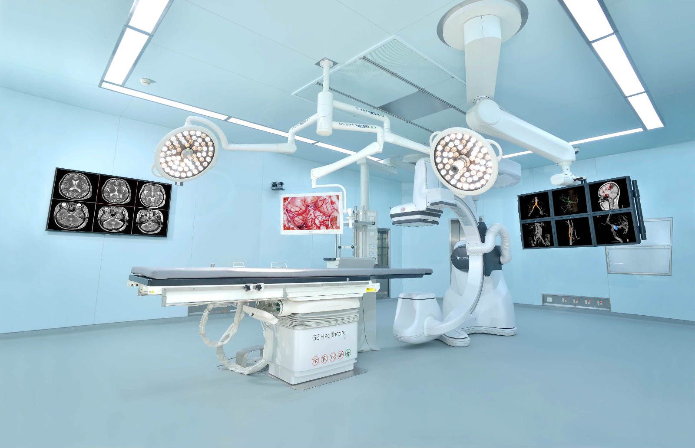

01关于康迎 · About
卓越，
源自专业。
自 2002 年起，专注医院数字化智慧手术室系统与设备。

02公司简介
二十余年，
专注手术室。
上海康迎医疗器械有限公司成立于 2002 年，是一家致力于医院数字化智慧手术室系统和设备的专业化公司，为医院提供数字一体化智慧手术室系统及远程手术云技术平台的整体解决方案。
随着中国医疗市场的蓬勃发展，康迎医疗抓住机遇，迎接挑战，秉承“卓越，源自专业”的经营理念，十多年来与全国各地医院及医疗机构建立了长期良好的合作关系。公司不仅建立了强大的全国性分销网络，而且拥有一支具有丰富专业知识、丰富经验的市场技术支持和售后服务团队，在北京、上海、广州等中国主要地区均建有办事机构，并都配有专业的市场技术和售后服务人员，为客户提供周到完善的服务，以高品质的产品和完善的售后服务赢得了广大用户的信赖和支持。
康迎医疗在中国已累计完成安装了 6000 多间的手术室系统设备，涉及 80 多家“中国百佳医院”。迄今为止，中国已有 400 多位外科专家成为了我们的用户，遍及全国 31 个省市，深受专家的好评。
上海康迎医疗器械有限公司贯彻“追求卓越，止于至善”的企业文化精神，将继续为中国的用户提供更高品质的产品和更加全面及时的服务，为创造一个美好和谐的医疗环境贡献一份力量。
2002成立于上海
6000+累计安装手术室系统
80+“中国百佳医院”
400+外科专家用户
31覆盖省市
03理念与文化
我们相信的事。
经营理念
卓越，源自专业。
以高品质的产品和完善的售后服务，赢得用户的信赖与支持。
企业文化
追求卓越，
止于至善。
为中国用户提供更高品质的产品和更加全面及时的服务。
—联系康迎